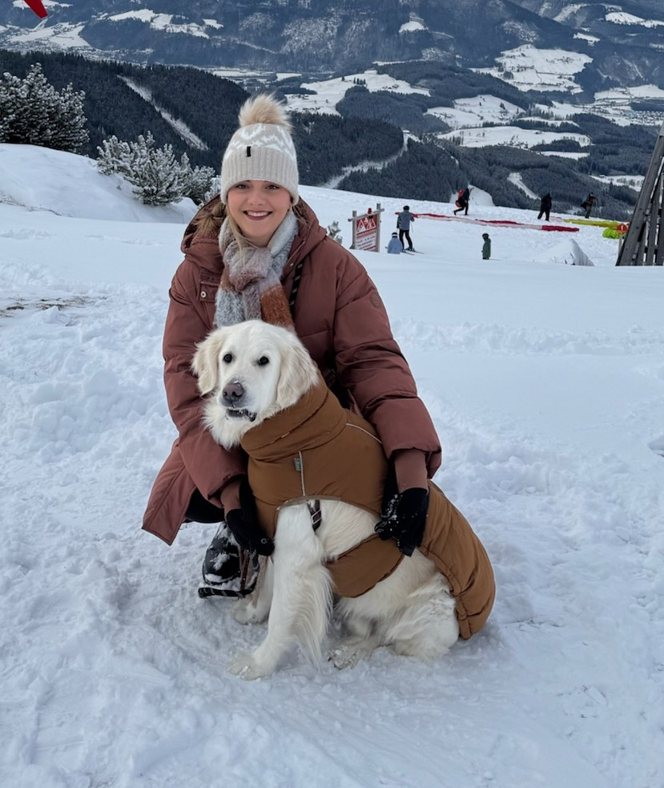

PR · Communications · Brand storytelling
Good stories make connections.
I'm Olivia, a communications professional who loves finding the human story behind complex ideas, building relationships, and helping brands show up with purpose.
Explore my workDownload portfolio ↓
A little about me
Curious by nature. People-first by choice.
I'm an American communications professional based in the Frankfurt area of Germany. Over the past six years, I've worked across public relations, client communications, and marketing, helping organizations tell stories that are clear, timely, and worth paying attention to.
My work has taken me from consumer brands to AI, fintech, and emerging technology. What I enjoy most is the mix of creative thinking and real relationships: understanding what matters to an audience, finding the right angle, and bringing people together around a story.
Outside work, you'll usually find me exploring somewhere new, cooking, or spending time with my English Golden Retriever, Prince.
Experience
Promoted July 2026
My approach
The strategy behind the story.
Great communications start with understanding the audience, finding the right angle, and telling a story worth paying attention to. Here’s how I approach different aspects of my work.
Strategic PR & media relations
I look for stories journalists genuinely want to tell, combining research, thoughtful angles, and trusted relationships to help brands join meaningful conversations.
Brand storytelling & positioning
I enjoy finding the human side of complex ideas and translating technical topics into clear, engaging narratives for the people who matter most.
Thought leadership & executive visibility
I help business leaders turn their expertise into useful perspectives through interviews, contributed articles, podcasts, and timely commentary.
Content strategy & writing
From articles and media pitches to press releases and campaign messaging, I write with the audience in mind and a clear purpose behind every word.
Earned media
Selected media coverage.
A collection of published stories from campaigns and client work I've contributed to. These are independent editorial articles, not pieces I authored.
Abu Dhabi firm to launch tokenized US Treasuries fund
View coverage ↗AI wing girl boosts dates 300%, dating service says
View coverage ↗AI chatbots, mental health, and the risks of loneliness
View coverage ↗Aimi’s mobile app lets you remix endless AI-generated beats
View coverage ↗Google, Oliver Wyman, Corridor launch gen AI sandbox for banks
View coverage ↗Teachers Federal Credit Union joins AI-based lending trend
View coverage ↗AI agents for creators: Now every influencer can have a digital team
View coverage ↗RHEI overhauls Made platform with proactive AI agents
View coverage ↗Africa embraces stablecoins via IOTA to unlock pan-continent trade
View coverage ↗Iranians abroad follow protests in anguish
View coverage ↗Matchmakers discuss clients’ unrealistic expectations
View coverage ↗AI and the OnlyFans chat industry
View coverage ↗I stopped saying thanks to ChatGPT. Here’s what happened
View coverage ↗PassiveLogic, NOA, and building automation
View coverage ↗RHEI launches Made to support creators with AI
View coverage ↗Executive visibility
Podcast features.
Selected podcast conversations featuring leaders and topics from communications work I supported.
The Question Isn’t Whether AI Will Replace Creativity, It’s How It Will Expand It
Listen to episode ↗Addressing Fear of AI Transformation and Burnout & Hiring Entrepreneurial Spirit
Listen to episode ↗PR Advice for Founders in the AI Era
Listen to episode ↗Writing portfolio
Words that do the work.
PR insights, media pitching, AI, and communications. Selected published PR articles and practical communications insights.
4 ways PR pros can work smarter with AI ↗Read article
How to find a tech PR agency in 2026 ↗Read article
Earned media matters in the age of AI ↗Read article
How to draft better media pitches ↗Read article
Your PR pitch checklist ↗Read article
How to create a memorable podcast pitch ↗Read article
PR isn’t only about press releases ↗Read article
5 tips for a great thought leadership article ↗Read article
Biggest PR mistakes founders make ↗Read article
AI-powered PR tools making a splash ↗Read article
Thought leadership & contributed pieces
A selection of thought leadership articles I helped bring to life through executive interviews, research, and ghostwriting. I worked closely with industry leaders to turn their expertise and perspectives into compelling articles published under their names in respected industry and business publications.